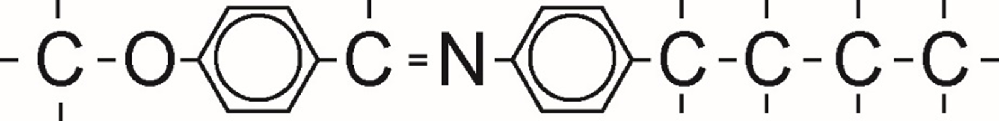
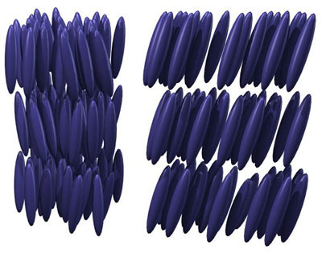
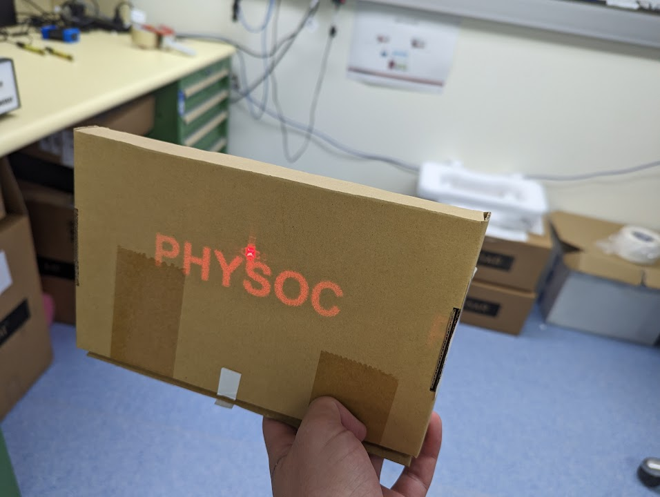
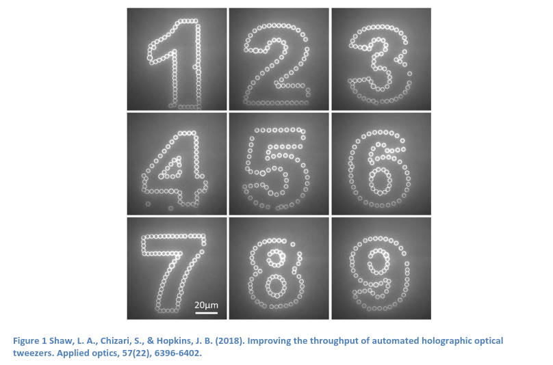
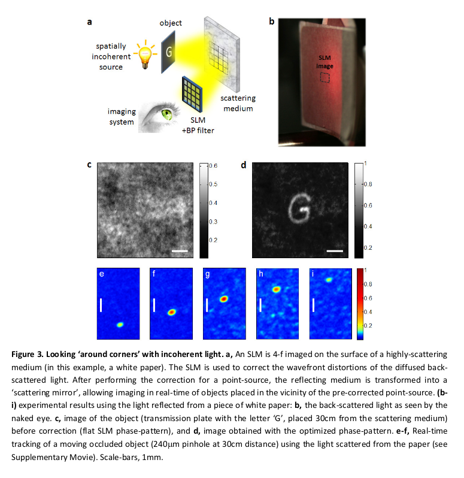

An Introduction To LCOS
Date: 2024-08-01
Last Updated:
From my time at Finisar I got to work extensively with Liquid Crystal on Silicon (LCOS), Spatial Light Modulators (SLMs). This page is my attempt to share a little of what I've learned, because it is such a cool technology that I hope others get to work with.
1 What is an LCOS SLM?
There are two acronyms here, so I will break it down into its composite parts before I piece everything back together.
1.1 Liquid Crystals
We all know that liquids are substances without any structure, the molecules are free to move around, and don't have any structure. A crystal on the other hand, has a lot of structure, it is a substance with a structure that repeats in one, two or three dimensions (or four if you count time crystals ). Bringing the two concepts together, liquid crystals are a substance with a loosely repeating structure, where molecules are free to jostle, twist, and rotate, but not break out of their structure.
The molecular structure of the liquid crystals we are interested in gives it another trick that makes it useful for our applications. If we consider the MBBA molecule:

It has a long rod-like structure, AND a free electron that is able to move up and down the length of the molecule uninterrupted. This electron makes the substance both electrically and optically active.
Putting all this together, liquid crystals are long, rod shaped molecules who arrange themselves in a repeating lattice with both electrical and optical responses.

1.2.1 Electrical Properties of Liquid Crystals {#electrical-properties}
As a result of that free electron, when we expose a liquid crystal lattice to an electric field, the molecules will rotate, re-orienting themselves to point in the same direction of the electric field. This means that by applying a voltage, we can control the axis or the direction of our liquid crystal.
1.2.2 Optical Properties of Liquid Crystals {#optical-properties}
That free electron also affects the optical properties of the light. This is because light is an electro-magnetic field, so the free electron will oscillate in harmony with the electric field of any light that passes through it, this slows down the speed of light through the substance. There is a catch though, that electron can only run up and down the length of the molecule, so if the molecule is not totally in the same axis as the electric field of the light, the effect will be reduced. That means that the refractive index of the substance (the speed which light moves through it), is determined by the the angle the light hits the crystal at.
This is important, because slowing down light is how we bend it. Imagine when you are driving a car, and your left tyre is slowed by a puddle, making you veer left. When light hits a slow patch at an angle it bends. This is how lenses (like the ones in your glasses works.)
1.2 Silicon
Now that we have gotten liquid crystals out of the way, lets talk about silicon technology. Undoubtedly computers have changed the world, but convenient side effect for us that work in optics, is that the computer revolution has resulted in cheap, high quality semiconductor manufacturing. So any time we can exploit silicon technology for optics, we jump on the opportunity.
In order to control those liquid crystals I described above, we sandwich the liquid crystal between a silicon chip and a conductive transparent top glass. The silicon chip lets us apply a custom voltage anywhere in the x-y plane. That is, we can create an arbitrary electric field pattern across the liquid crystal.
2 Putting it all together {#putting-together-the-first-word}
After all that, we are ready to understand what the device does. An LCoS is a device that allows you to apply any refractive index profile you want in an x-y plane. It does this by creating an arbitrary electric field profile using silicon chip technology, and placing liquid crystals within that field, whose refractive index is a function electric field strength. This contraption allows you modulate the phase of incoming light in space. This is why we call them a Spatial Light Modulator.
In simple English. This is a lens, that we can reshape into any optical configuration from a computer.
3 Applications
There are a surprising number of applications for LCOS SLMs, from Beam Steering, to photographing through walls and around corners, but I want to talk about digital holography for now.
3.1 Digital Holography
Using spatial light phase modulation, we can use an SLM to create a real life holograms. The required necessary phase map to create a given hologram's amplitude map can be calculated using the Gerchburg Saxton Algorithm.
This algorithm creates a phase profile, which when light propagates through, creates constructive interference at the desired points in 3D space, and deconstructively interferes everywhere else.
Below you can see a hologram I built in the lab. The photo fails to do it justice. If I were to move the box forward or backwards, the hologram would disappear, since it was programmed to appear at that specific point in space. It would have worked better if I had a smoke machine on hand.

3.1.1 Holographic Optical Tweezers
Aside from cool sci-fi implications of real life holograms replacing zoom calls, I would like to highlight one especially cool application of Computer Generated Holograms and LCOS SLMs, and that is Optical Tweezers. This effect relies on the fact that light has momentum. By exploiting this fact, we can use CGH to create a donut shaped light intensity profile, and use the momentum contained within this profile to pick up and move around small objects. This is super useful for things like neuron cells, which tend to respond poorly to being picked up by glass pipettes. Holographic Optical Tweezers offer a comparatively gentle experience for the cells. This concept is used with some regularity within biological research and is a commercial product offered by Meadowlark Polarisation Optics. You can see a demonstration below, where particles only 4.5 micrometers are being manipluated by such a device.

3.2 Spy Stuff
It turn out, the only difference between white paint and a mirror, is that white paint isn't very smooth. It reflects all the colours the same as a mirror, but scatters the light - reflecting it at different angles and distances.
This is where the LCOS comes in again, if the light has been scattered by the white paint, we can use an LCOS to undo that distortion, and reconstruct an image. This is what these researchers figured out, where they were able to take photos around corners by photographing white paint, and through "privacy" glass.

Credit: Katz, O. (2012)4 Conclusion
I hope you enjoyed this short introduction to my niche area of interest. There are plenty of cool applications for LCoS in the world of research and engineering, and if you ever get the chance to work with the, I would highly recommend it.